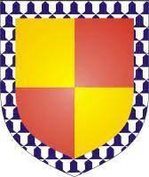

24035670 Baron John de Balliol * omkring 1216 Barnard Castle, Gainford, Durham, England † 1268-08-27 Barnard Castle, Gainford, Durham, England Baron av Balliol Blev ca 52 år
48071340 Lord Hugh de Balliol * omkring 1189 Barnard Castle, Gainford, Durham, England † 1229-05-02 Barnard Castle, Gainford, Durham, England Lord of Balloil & Barnard Castle & Gainford Blev ca 40 år
96142680 Eustace de Balliol (Helicourt) * omkring 1150 Bywell, Northumberland, England † 1209 England
Blev ca 59 år

96142681 Peronille FitzPiers
48071341 Cecily de Fontaines * omkring 1198 Richmond Castle, Aberdeenshire, Scotland † 1228-02-02 Barnard Castle, Gainford, Durham, England